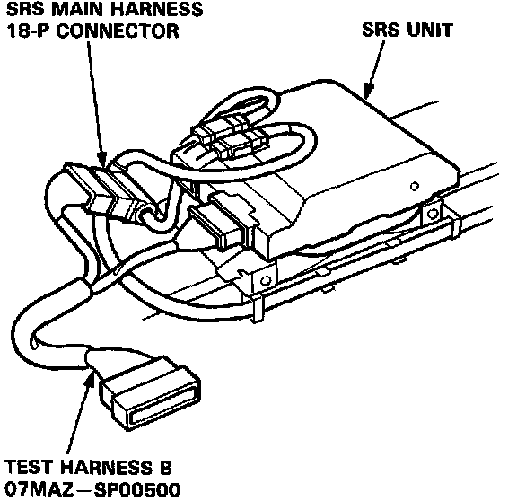
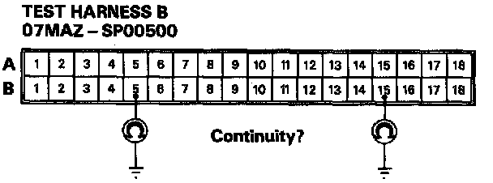

Poor Ground at SRS Unit or Unit Mounting Bolts
POOR GROUND AT SRS UNIT OR UNIT MOUNTING BOLTS.1. Before disconnecting any part of the SRS wire harness, install the short connectors.
2. Connect Test Harness B (O7MAZ-SP00500) between the SRS unit and SRS main harness 18-P connector.

3. Check for continuity between the B5 terminal and body ground, and the B15 terminal and body ground.

- If there is continuity, the SRS unit is faulty. Replace and recheck the voltages.
- If there is no continuity, the SRS unit ground, the SRS unit component grounds or the SRS main harness is faulty. Check the grounds (check wire and control unit mounting bolts) and, if necessary, replace the SRS main harness. Recheck the voltages.